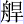

話表寇員外既得回生，復整理了幢幡鼓樂，僧道親友，依舊送行不題。
卻說唐僧四眾，上了大路，果然西方佛地，與他處不同。見了些琪花、瑤草、古柏、蒼松，所過地方，家家向善，戶戶齋僧，每逢山下人修行，又見林間客誦經。師徒們夜宿曉行，又經有六七日，忽見一帶高樓，幾層傑閣，真個是沖天百尺，聳漢凌空。低頭觀落日，引手摘飛星。豁達窗軒吞宇宙，嵯峨棟宇接雲屏，黃鶴信來秋樹老，彩鸞書到晚風清。此乃是靈宮寶闕，琳館珠庭。真堂談道，宇宙傳經。花向春來美，松臨雨過青。紫芝仙果年年秀，丹鳳儀翔萬感靈。
三藏舉鞭遙指道：「悟空，好去處耶！」行者道：「師父，你在那假境界假佛相處，倒強要下拜；今日到了這真境界真佛相處，倒還不下馬，是怎的說？」三藏聞言，慌的翻身跳下來，已到了那樓閣門首。只見一個道童，斜立山門之前叫道：「那來的莫非東土取經人麼？」長老急整衣，抬頭觀看，見他身披錦衣，手搖玉麈。身披錦衣，寶閣瑤池常赴宴；手搖玉麈，丹台紫府每揮塵。肘懸仙菉，足踏履鞋。飄然真羽士，秀麗實奇哉。煉就長生居勝境，修成永壽脫塵埃。聖僧不識靈山客，當年金頂大仙來。
孫大聖認得他，即叫：「師父，此乃是靈山腳下玉真觀金頂大仙，他來接我們哩。」三藏方才醒悟，進前施禮。大仙笑道：「聖僧今年才到，我被觀音菩薩哄了。他十年前領佛金旨，向東土尋取經人，原說二三年就到我處。我年年等候，渺無消息，不意今年才相逢也。」三藏合掌道：「有勞大仙盛意，感激！感激！」遂此四眾牽馬挑擔，同入觀裏，卻又與大仙一一相見。即命看茶擺齋，又叫小童兒燒香湯與聖僧沐浴了，好登佛地。正是那：
功滿行完宜沐浴，煉馴本性合天真。千辛萬苦今方息，九戒三皈始自新。
魔盡果然登佛地，災消故得見沙門。洗塵滌垢全無染，反本還原不壞身。
師徒們沐浴了，不覺天色將晚，就於玉真觀安歇。次早，唐僧換了衣服，披上錦襴袈裟，戴了毗盧帽，手持錫杖，登堂拜辭大仙。大仙笑道：「昨日襤褸，今日鮮明，觀此相真佛子也。」三藏拜別就行，大仙道；「且住，等我送你。」行者道：「不必你送，老孫認得路。」大仙道：「你認得的是雲路。聖僧還未登雲路，當從本路而行。」行者道：「這個講的是，老孫雖走了幾遭，只是雲來雲去，實不曾踏著此地。既有本路，還煩你送送，我師父拜佛心重，幸勿遲疑。」那大仙笑吟吟，攜著唐僧手，接引旃壇上法門。原來這條路不出山門，就自觀宇中堂穿出後門便是。大仙指著靈山道：「聖僧，你看那半天中有祥光五色，瑞藹千重的，就是靈鷲高峰，佛祖之聖境也。」唐僧見了就拜，行者笑道：「師父，還不到拜處哩。常言道望山走倒馬，離此鎮還有許遠，如何就拜！若拜到頂上，得多少頭磕是？」大仙道：「聖僧，你與大聖、天蓬、捲簾四位，已此到於福地，望見靈山，我回去也。」三藏遂拜辭而去。
大聖引著唐僧等，徐徐緩步，登了靈山，不上五六里，見了一道活水，滾浪飛流，約有八九里寬闊，四無人跡。三藏心驚道：「悟空，這路來得差了，敢莫大仙錯指了？此水這般寬闊，這般洶湧，又不見舟楫，如何可渡？」行者笑道：「不差！你看那壁廂不是一座大橋？要從那橋上行過去，方成正果哩。」長老等又近前看時，橋邊有一匾，匾上有凌雲渡三字，原來是一根獨木橋。正是：
遠看橫空如玉棟，近觀斷水一枯槎。維河架海還容易，獨木單樑人怎蹅！
萬丈虹霓平臥影，千尋白練接天涯。十分細滑渾難渡，除是神仙步彩霞。
三藏心驚膽戰道：「悟空，這橋不是人走的，我們別尋路徑去來。」行者笑道：「正是路！正是路！」八戒慌了道：「這是路，哪個敢走？水面又寬，波浪又湧，獨獨一根木頭，又細又滑，怎生動腳？」行者道：「你都站下，等老孫走個兒你看。」好大聖，拽開步跳上獨木橋，搖搖擺擺，須臾跑將過去，在那邊招呼道：「過來！過來！」唐僧搖手，八戒、沙僧咬指道：「難！難！難！」行者又從那邊跑過來，拉著八戒道：「呆子，跟我走，跟我走！」那八戒臥倒在地道：「滑！滑！滑！走不得！你饒我罷！讓我駕風霧過去！」行者按住道：「這是甚麼去處，許你駕風霧？必須從此橋上走過，方可成佛。」八戒道：「哥啊，佛做不成也罷，實是走不得！」
他兩個在那橋邊，滾滾爬爬，扯扯拉拉的耍鬥。沙僧走去勸解，才撒脫了手。三藏回頭，忽見那下溜中有一人撐一隻船來，叫道：「上渡！上渡！」長老大喜道：「徒弟，休得亂玩。那裏有只渡船兒來了。」他三個跳起來站定，同眼觀看，那船兒來得至近，原來是一隻無底的船兒。行者火眼金睛，早已認得是接引佛祖，又稱為南無寶幢光王佛。行者卻不題破，只管叫：「這裏來！撐攏來！」霎時撐近岸邊，又叫：「上渡！上渡！」三藏見了，又心驚道：「你這無底的破船兒，如何渡人？」佛祖道：「我這船鴻蒙初判有聲名，幸我撐來不變更。有浪有風還自穩，無終無始樂昇平。六塵不染能歸一，萬劫安然自在行。無底船兒難過海，今來古往渡群生。」
孫大聖合掌稱謝道：「承盛意接引吾師。師父，上船去，他這船兒雖是無底，卻穩；縱有風浪，也不得翻。」長老還自驚疑，行者叉著膊子，往上一推。那師父踏不住腳，轂轆的跌在水裏，早被撐船人一把扯起，站在船上。師父還抖衣服，垛鞋腳，抱怨行者。行者卻引沙僧、八戒，牽馬挑擔，也上了船，都立在

之上。那佛祖輕輕用力撐開，只見上溜頭泱下一個死屍。長老見了大驚，行者笑道：「師父莫怕，那個原來是你。」八戒也道：「是你是你！」沙僧拍著手也道：「是你是你！」那撐船的打著號子也說：「那是你！可賀可賀！」他們三人，也一齊聲相和。撐著船，不一時穩穩噹噹的過了凌雲仙渡。三藏才轉身，輕輕的跳上彼岸。有詩為證，詩曰：脫卻胎胞骨肉身，相親相愛是元神。今朝行滿方成佛，洗淨當年六六塵。
此誠所謂廣大智慧，登彼岸無極之法。四眾上岸回頭，連無底船兒卻不知去向，行者方說是接引佛祖。三藏方才省悟，急轉身，反謝了三個徒弟，行者道：「兩不相謝，彼此皆扶持也。我等虧師父解脫，借門路修功，幸成了正果；師父也賴我等保護，秉教伽持，喜脫了凡胎。師父，你看這面前花草松篁，鸞鳳鶴鹿之勝境，比那妖邪顯化之處，孰美孰惡？何善何凶？」三藏稱謝不已。一個個身輕體快，步上靈山，早見那雷音古剎：
頂摩霄漢中，根接須彌脈。巧峰排列，怪石參差。懸崖下瑤草琪花，曲徑旁紫芝香蕙。仙猿摘果入桃林，卻似火燒金；白鶴犧松立枝頭，渾如煙捧玉。彩鳳雙雙，青鸞對對。彩鳳雙雙，向日一鳴天下瑞；青鸞對對，迎風耀舞世間稀。又見那黃森森金瓦迭鴛鴦，明幌幌花磚鋪瑪瑙。東一行，西一行，盡都是蕊宮珠闕；南一帶，北一帶，看不了寶閣珍樓。天王殿上放霞光，護法堂前噴紫焰。浮屠塔顯，優缽花香、正是地勝疑天別，雲閒覺晝長。紅塵不到諸緣盡，萬劫無虧大法堂。
師徒們逍逍遙遙，走上靈山之巔，又見青松林下列優婆，翠柏叢中排善士。長老就便施禮，慌得那優婆塞、優婆夷、比丘僧、比丘尼合掌道：「聖僧且休行禮，待見了牟尼，卻來相敘。行者笑道：「早哩！早哩！且去拜上位者。」那長老手舞足蹈，隨著行者，直至雷音寺山門之外。那廂有四大金剛迎住道：「聖僧來耶？」三藏躬身道：「是弟子玄奘到了。」答畢就欲進門，金剛道：「聖僧少待，容稟過再進。」那金剛著一個轉山門報與二門上四大金剛，說唐僧到了；二門上又傳入三門上，說唐僧到了；三山門內原是打供的神僧，聞得唐僧到時，急至大雄殿下，報與如來至尊釋迦牟尼文佛說：「唐朝聖僧到於寶山取經來了。」佛爺爺大喜，即召聚八菩薩、四金剛、五百阿羅、三千揭諦、十一大曜、十八伽藍，兩行排列，卻傳金旨，召唐僧進。那裏邊，一層一節，欽依佛旨，叫：「聖僧進來。」這唐僧循規蹈矩，同悟空、悟能、悟淨，牽馬挑擔，徑入山門。正是：
當年奮志奉欽差，領牒辭王出玉階。清曉登山迎霧露，黃昏枕石臥雲霾。挑禪遠步三千水，飛錫長行萬里崖。念念在心求正果，今朝始得見如來。
四眾到大雄寶殿殿前，對如來倒身下拜。拜罷，又向左右再拜。各各三匝已遍，復向佛祖長跪，將通關文牒奉上，如來一一看了，還遞與三藏。三藏俯囪作禮，啟上道：「弟子玄奘，奉東土大唐皇帝旨意，遙詣寶山，拜求真經，以濟眾生。望我佛祖垂恩，早賜回國。」如來方開憐憫之口，大發慈悲之心，對三藏言曰：「你那東土乃南贍部洲，只因天高地厚，物廣人稠，多貪多殺，多淫多誑，多欺多詐；不遵佛教，不向善緣，不敬三光，不重五穀；不忠不孝，不義不仁，瞞心昧己，大斗小秤，害命殺牲。造下無邊之孽，罪盈惡滿，致有地獄之災，所以永墮幽冥，受那許多碓搗磨舂之苦，變化畜類。有那許多披毛頂角之形，將身還債，將肉飼人。其永墮阿鼻，不得超升者，皆此之故也。雖有孔氏在彼立下仁義禮智之教，帝王相繼，治有徒流絞斬之刑，其如愚昧不明，放縱無忌之輩何耶！我今有經三藏，可以超脫苦惱，解釋災愆。三藏：有法一藏，談天；有論一藏，說地；有經一藏，度鬼。共計三十五部，該一萬五千一百四十四卷。真是修真之徑，正善之門，凡天下四大部洲之天文、地理、人物、鳥獸、花木、器用、人事，無般不載。汝等遠來，待要全付與汝取去，但那方之人，愚蠢村強，譭謗真言，不識我沙門之奧旨。」叫：「阿難、伽葉，你兩個引他四眾，到珍樓之下，先將齋食待他。齋罷，開了寶閣，將我那三藏經中三十五部之內，各檢幾卷與他，教他傳流東土，永注洪恩。」
二尊者即奉佛旨，將他四眾領至樓下，看不盡那奇珍異寶，擺列無窮。只見那設供的諸神，鋪排齋宴，並皆是仙品、仙餚、仙茶、仙果，珍饈百味，與凡世不同。師徒們頂禮了佛恩，隨心享用，其實是：
寶焰金光映目明，異香奇品更微精。千層金閣無窮麗，一派仙音入耳清。
素味仙花人罕見，香茶異食得長生。向來受盡千般苦，今日榮華喜道成。
這番造化了八戒，便宜了沙僧，佛祖處正壽長生，脫胎換骨之饌，盡著他受用。二尊者陪奉四眾餐畢，卻入寶閣，開門登看。那廂有霞光瑞氣，籠罩千重；彩霧祥雲，遮漫萬道。經櫃上，寶篋外，都貼了紅簽，楷書著經卷名目。乃是：《涅槃經》一部，七百四十八卷；《菩薩經》一部，一千二十一卷；《虛空藏經》一部，四百卷；《首楞嚴經》一部，一百一十卷；《恩意經大集》一部，五十卷；《決定經》一部，一百四十卷；《寶藏經》一部，四十五卷；《華嚴經》一部，五百卷；《禮真如經》一部，九十卷；《大般若經》一部，九百一十六卷；《大光明經》一部，三百卷；《未曾有經》一部，一千一百一十卷；《維摩經》一部，一百七十卷；《三論別經》一部，二百七十卷；《金剛經》一部，一百卷；《正法論經》一部，一百二十卷；《佛本行經》一部，八百卷；《五龍經》一部，三十二卷；《菩薩戒經》一部，一百一十六卷；《大集經》一部，一百三十卷；《摩竭經》一部，三百五十卷；《法華經》一部，一百卷；《瑜伽經》一部，一百卷；《寶常經》一部，二百二十卷；《西天論經》一部，一百三十卷；《僧祇經》一部，一百五十七卷；《佛國雜經》一部，一千九百五十卷；《起信論經》一部，一千卷；《大智度經》一部，一千八十卷；《寶威經》一部，一千二百八十卷；《本閣經》一部，八百五十卷；《正律文經》一部，二百卷；《大孔雀經》一部，二百二十卷；《維識論經》一部，一百卷；《具舍論經》一部，二百卷。
阿難、伽葉引唐僧看遍經名，對唐僧道：「聖僧東土到此，有些甚麼人事送我們？快拿出來，好傳經與你去。三藏聞言道：「弟子玄奘，來路迢遙，不曾備得。」二尊者笑道：「好，好，好！白手傳經繼世，後人當餓死矣！」行者見他講口扭捏，不肯傳經，他忍不住叫噪道：「師父，我們去告如來，教他自家來把經與老孫也。」阿難道：「莫嚷！此是甚麼去處，你還撒野放刁！到這邊來接著經。」八戒、沙僧耐住了性子，勸住了行者，轉身來接。一卷卷收在包裏，馱在馬上，又捆了兩擔，八戒與沙僧挑著，卻來寶座前叩頭，謝了如來，一直出門。逢一位佛祖，拜兩拜；見一尊菩薩，拜兩拜。又到大門，拜了比丘僧、尼，優婆夷、塞，一一相辭，下山奔路不題。
卻說那寶閣上有一尊燃燈古佛，他在閣上，暗暗的聽著那傳經之事，心中甚明，原是阿難、伽葉將無字之經傳去，卻自笑云：「東土眾僧愚迷，不識無字之經，卻不枉費了聖僧這場跋涉？」問：「座邊有誰在此？」只見白雄尊者閃出。古佛吩咐道：「你可作起神威，飛星趕上唐僧，把那無字之經奪了，教他再來求取有字真經。」白雄尊者，即駕狂風，滾離了雷音寺山門之外，大作神威。那陣好風，真個是：
佛前勇士，不比巽二風神。仙竅怒號，遠賽吹噓少女。這一陣，魚龍皆失穴，江海逆波濤。玄猿捧果難來獻，黃鶴回雲找舊巢。丹鳳清音鳴不美，錦雞喔運叫聲嘈。青松枝折，優缽花飄。翠竹竿竿倒，金蓮朵朵搖。鐘聲遠送三千里，經韻輕飛萬壑高。崖下奇花殘美色，路旁瑤草偃鮮苗。彩鸞難舞翅，白鹿躲山崖。蕩蕩異香漫宇宙，清清風氣徹雲霄。
那唐長老正行間，忽聞香風滾滾，只道是佛祖之禎祥，未曾提防。又聞得響一聲，半空中伸下一隻手來，將馬馱的經輕輕搶去，唬得個三藏捶胸叫喚，八戒滾地來追，沙和尚護守著經擔，孫行者急趕去如飛。那白雄尊者，見行者趕得將近，恐他棍頭上沒眼，一時間不分好歹，打傷身體，即將經包捽碎，拋落塵埃。行者見經包破落，又被香風吹得飄零，卻就按下雲頭，顧經不去追趕。那白雄尊者收風斂霧，回報古佛不題。
八戒去追趕，見經本落下，遂與行者收拾背著，來見唐僧。唐僧滿眼垂淚道：「徒弟呀！這個極樂世界，也還有凶魔欺害哩！」沙僧接了抱著的散經，打開看時，原來雪白，並無半點字跡，慌忙遞與三藏道：「師父，這一卷沒字。」行者又打開一卷看時，也無字。八戒打開一卷，也無字。三藏叫：「通打開來看看。」卷卷俱是白紙。長老短歎長吁的道：「我東土人果是沒福！似這般無字的空本，取去何用？怎麼敢見唐王！誑君之罪，誠不容誅也！」行者早已知之，對唐僧道：「師父，不消說了，這就是阿難、伽葉那廝，問我要人事沒有，故將此白紙本子與我們來了。快回去告在如來之前，問他掯財作弊之罪。」八戒嚷道：「正是！正是！告他去來！」
四眾急急回山，無好步，忙忙又轉上雷音。不多時，到於山門之外，眾皆拱手相迎，笑道：「聖僧是換經來的？」三藏點頭稱謝。眾金剛也不阻擋，讓他進去，直至大雄殿前。行者嚷道：「如來！我師徒們受了萬蜇千魔，千辛萬苦，自東土拜到此處，蒙如來吩咐傳經，被阿難、伽葉掯財不遂，通同作弊，故意將無字的白紙本兒教我們拿去，我們拿他去何用！望如來敕治！」佛祖笑道：「你且休嚷，他兩個問你要人事之情，我已知矣。但只是經不可輕傳，亦不可以空取，向時眾比丘聖僧下山，曾將此經在舍衛國趙長者家與他誦了一遍，保他家生者安全，亡者超脫，只討得他三斗三升米粒黃金回來，我還說他們忒賣賤了，教後代兒孫沒錢使用。你如今空手來取，是以傳了白本。白本者，乃無字真經，倒也是好的。因你那東土眾生，愚迷不悟，只可以此傳之耳。」即叫：「阿難、伽葉，快將有字的真經，每部中各檢幾卷與他，來此報數。」
二尊者復領四眾，到珍樓寶閣之下，仍問唐僧要些人事。三藏無物奉承，即命沙僧取出紫金缽盂，雙手奉上道：「弟子委是窮寒路遙，不曾備得人事。這缽盂乃唐王親手所賜，教弟子持此，沿路化齋。今特奉上，聊表寸心，萬望尊者不鄙輕褻，將此收下，待回朝奏上唐王，定有厚謝。只是以有字真經賜下，庶不孤欽差之意，遠涉之勞也。」那阿難接了，但微微而笑。被那些管珍樓的力士，管香積的庖丁，看閣的尊者，你抹他臉，我撲他背，彈指的，扭唇的，一個個笑道：「不羞！不羞！需索取經的人事！」須臾把臉皮都羞皺了，只是拿著缽盂不放。
伽葉卻才進閣檢經，一一查與三藏，三藏卻叫：「徒弟們，你們都好生看看，莫似前番。」他三人接一卷，看一卷，卻都是有字的。傳了五千零四十八卷，乃一藏之數，收拾齊整馱在馬上，剩下的還裝了一擔，八戒挑著。自己行囊，沙僧挑著。行者牽了馬，唐僧拿了錫杖，按一按毗盧帽，抖一抖錦袈裟，才喜喜歡歡，到我佛如來之前、正是那：
大藏真經滋味甜，如來造就甚精嚴。須知玄奘登山苦，可笑阿難卻愛錢。
先次未詳虧古佛，後來真實始安然。至今得意傳東土，大眾均將雨露沾。
阿難、伽葉引唐僧來見如來，如來高昇蓮座，指令降龍、伏虎二大羅漢敲響雲磬，遍請三千諸佛、三千揭諦、八金剛、四菩薩、五百尊羅漢、八百比丘僧、大眾優婆塞、比丘尼、優婆夷，各天各洞，福地靈山，大小尊者聖僧，該坐的請登寶座，該立的侍立兩旁。一時間，天樂遙聞，仙音嘹喨，滿空中祥光迭迭，瑞氣重重，諸佛畢集，參見了如來。
如來問：「阿難、伽葉，傳了多少經卷與他？可一一報數。」二尊者即開報：「現付去唐朝《涅槃經》四百卷，《菩薩經》三百六十卷，《虛空藏經》二十卷，《首楞嚴經》三十卷，《恩意經大集》四十卷，《決定經》四十卷，《寶藏經》二十卷，《華嚴經》八十一卷，《禮真如經》三十卷，《大般若經》六百卷，《金光明品經》五十卷，《未曾有經》五百五十卷，《維摩經》三十卷，《三論別經》四十二卷，《金剛經》一卷，《正法論經》二十卷，《佛本行經》一百一十六卷，《五龍經》二十卷，《菩薩戒經》六十卷，《大集經》三十卷，《摩竭經》一百四十卷，《法華經》十卷，《瑜伽經》三十卷，《寶常經》一百七十卷，《西天論經》三十卷，《僧祇經》一百一十卷，《佛國雜經》一千六百三十八卷，《起信論經》五十卷，《大智度經》九十卷；《寶威經》一百四十卷，《本閣經》五十六卷，《正律文經》十卷，《大孔雀經》十四卷，《維識論經》十卷，《具舍論經》十卷。在藏總經，共三十五部，各部中檢出五千零四十八卷，與東土聖僧傳留在唐。現俱收拾整頓於人馬馱擔之上，專等謝恩。」
三藏四眾拴了馬，歇了擔，一個個合掌躬身，朝上禮拜。如來對唐僧言曰：「此經功德，不可稱量，雖為我門之龜鑒，實乃三教之源流。若到你那南贍部洲，示與一切眾生，不可輕慢，非沐浴齋戒，不可開卷，寶之重之！蓋此內有成仙了道之奧妙，有發明萬化之奇方也。」三藏叩頭謝恩，信受奉行，依然對佛祖遍禮三匝，承謹歸誠，領經而去。去到三山門，一一又謝了眾聖不題。
如來因打發唐僧去後，才散了傳經之會。旁又閃上觀世音菩薩合掌啟佛祖道：「弟子當年領金旨向東土尋取經之人，今已成功，共計得一十四年，乃五千零四十日，還少八日，不合藏數。望我世尊，早賜聖僧回東轉西，須在八日之內，庶完藏數，准弟子繳還金旨。」如來大喜道：「所言甚當，准繳金旨。」即叫八大金剛吩咐道：「汝等快使神威，駕送聖僧回東，把真經傳留，即引聖僧西回、須在八日之內，以完一藏之數，勿得遲違。」金剛隨即趕上唐僧，叫道：「取經的，跟我來！」唐僧等俱身輕體健，蕩蕩飄飄，隨著金剛，駕雲而起。
這才是：見性明心參佛祖，功完行滿即飛升。畢竟不知回東土怎生傳授，且聽下回分解。
本章完!